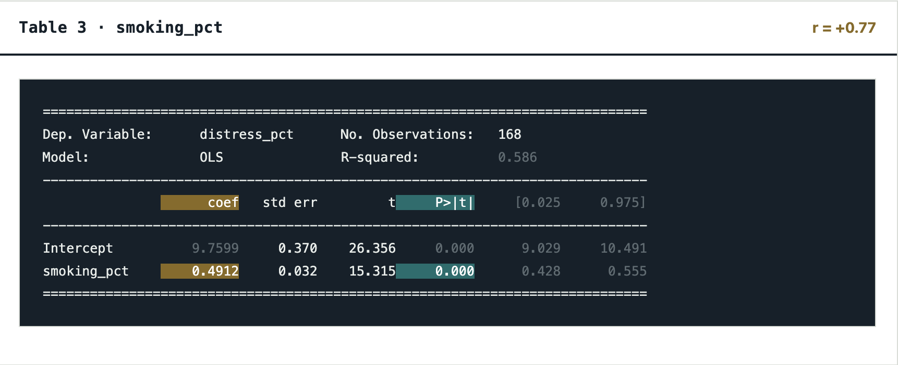

Correlation Between Adult Smoking and Mental Distress
Key Findings
The correlation coefficient (r = 0.77) indicates a strong positive relationship between smoking and mental distress.
For every 1-percentage-point increase in smoking_pct, distress_pct increases by an estimated 0.4912 percentage points.
The reported p-value of 0.000 (p < 0.001) is below 0.05, indicating that the association is statistically significant.

What This Means
Areas with higher smoking rates also tend to have higher rates of mental distress. This statistically significant association shows that the two measures are related, but it does not establish that smoking causes mental distress.